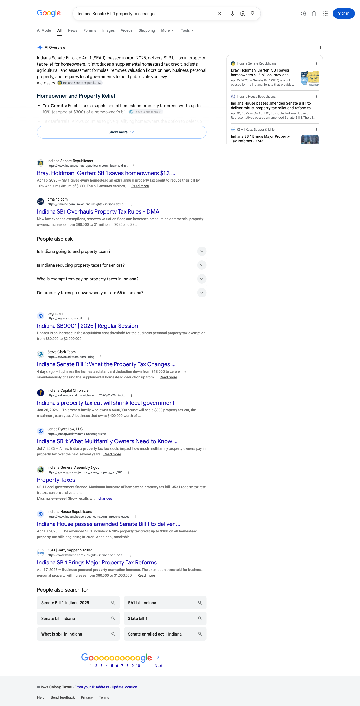
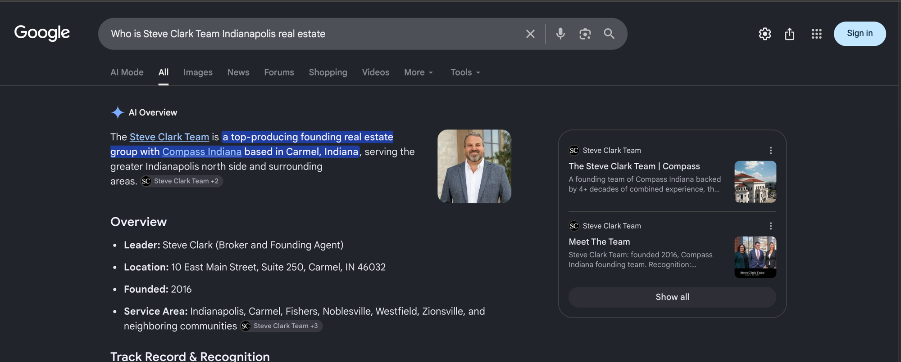
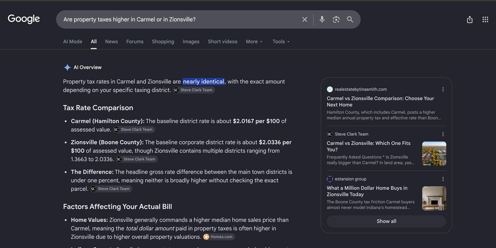
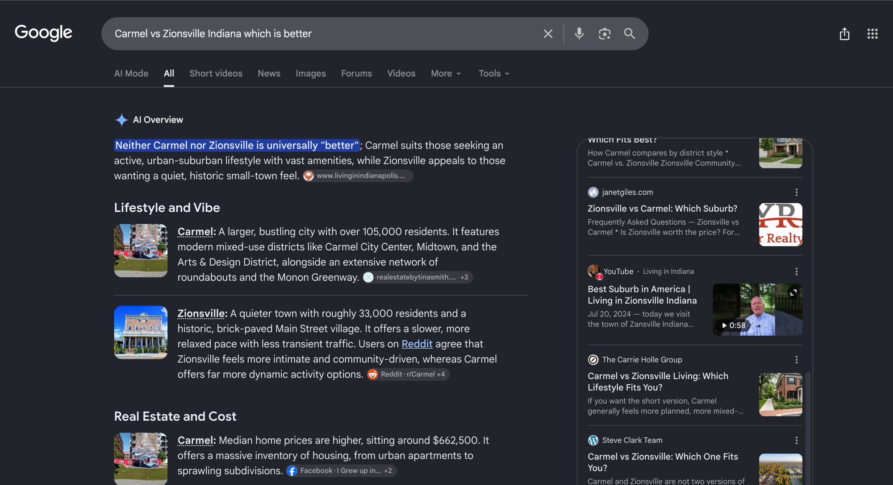
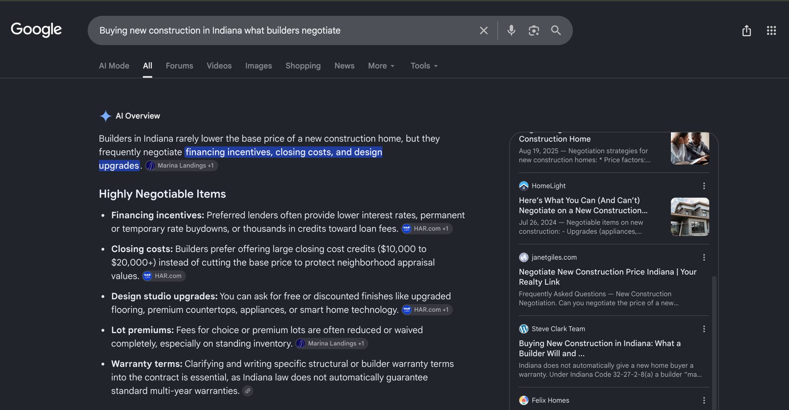

August 2026 | The Steve Clark Team
Executive summary
Nine pages went live on steveclarkteam.com on August 17, every one of them built from the public record. Across the thirteen buyer and seller questions we track on the Indianapolis north side and in the Hamilton and Boone County markets, your site is now carried as a source on thirteen, read between August 18 and August 30.
Judge the month on the seven questions tracked throughout it, where your site is now carried on seven. The other six were added to the tracked set at the end of the month. They are the buyer questions your own published pages already answer, and your pages are carried on six of them. Both groups are in the matrix, and only the seven are comparable with next month.
Eight of the nine pages published on August 17 were already being cited inside the same month they went live. In total fifteen distinct pages on steveclarkteam.com were carried as a source during this window: the eight new posts, plus five pages already on your site that are now being pulled into answers alongside the new work.
The answer holds across independent engines, not one. Perplexity carries a page of yours on eight of the thirteen questions and ChatGPT on eleven, and six questions are cited on both at once. Two separate systems reaching the same page for the same question is a sturdier position than either engine alone.
Your own name returns a body of work rather than a single page. Across these readings on the brand question, six of your own pages were carried as sources, including your home page, the broker page and your communities and search pages. On “Best real estate team Indianapolis,” the broadest non-brand question in the set, Perplexity returned your site, and it did so before any dedicated team page exists.
Google has already built one of its own AI answers from a page of yours. On the Indiana Senate Bill 1 property tax question, the AI Overview Google wrote carries an inline source chip reading Steve Clark Team on the Tax Credits line inside the answer. That is five of the seven questions we read on Google, on the most technical subject in the set, earned in the first month you published on it. The capture is in the Google section below.
The rest of that engine is the largest block of open ground in the report. Google writes an AI Overview on nine of the seven questions we read on it and writes no AI answer at all on the other zero. On four of the nine it wrote, it drew on someone else. Those four are answers that already exist, on the same subjects two other engines already reach for your pages on, and that is where September points.
Citation matrix
✓ Cited: your site is among the sources that answer drew on. These engines rebuild their answers on every search
– Not cited in that reading, which is one reading and not a settled absence for the month
◦ Google did not generate an AI Overview for this question, so there was no AI answer to be cited in
n/a Not read on that engine this month, so the cell is left blank rather than counted against you
| Buyer question | Google AI Overview | Perplexity | ChatGPT | |
|---|---|---|---|---|
| Who is Steve Clark Team Indianapolis real estatesteveclarkteam.com | ✓ | ✓ | ✓ | |
| Best real estate team Indianapolissteveclarkteam.com | – | ✓ | – | |
| LEAP Lebanon Innovation District home valuessteveclarkteam.com | – | ✓ | ✓ | |
| Meta Boone County Indiana data centersteveclarkteam.com | – | ✓ | – | |
| Boone County Indiana housing marketsteveclarkteam.com | – | – | ✓ | |
| Indiana Senate Bill 1 property tax changessteveclarkteam.com | ✓ | ✓ | ✓ | |
| Carmel vs Zionsville Indiana which is bettersteveclarkteam.com | ✓ | ✓ | ✓ | |
| Buying new construction in Indiana what builders negotiatesteveclarkteam.com | ✓ | ✓ | ✓ | |
| Are property taxes higher in Carmel or in Zionsville?steveclarkteam.com | ✓ | – | ✓ | |
| Why did Boone County's median home price fall while the number of homes sold went up?steveclarkteam.com | n/a | ✓ | ✓ | |
| Is new construction more expensive than resale in Hamilton County?steveclarkteam.com | n/a | – | ✓ | |
| How many permanent jobs will Meta's Lebanon data center actually create?steveclarkteam.com | n/a | – | ✓ | |
| Will my water and sewer rates go up in Boone County because of the LEAP water project?steveclarkteam.com | n/a | – | ✓ |
Perplexity
Perplexity picked up your new work quickly. On eight of the thirteen tracked questions it answers by drawing on a page of yours, and in most cases that page is one of the nine published on August 17. The third column names the pages on steveclarkteam.com that those answers drew on.
Google AI Overviews
Google wrote an AI Overview on nine of the questions it was read on, and built five of those answers partly from your site. Google displays your site as Steve Clark Team rather than as the domain, so that is the name to look for in a source list. All five are shown below. The Senate Bill 1 answer carries a chip inside the answer text itself; the property tax comparison carries four of them, on the opening line and on all three rate bullets; and the Carmel versus Zionsville and new construction answers each carry a Steve Clark Team card in the source panel. Read the four Overviews Google built from someone else as the ground that opens up next.





The nine pages now live were built to be thorough, and thoroughness is what earned them citations on the other two engines and, on Senate Bill 1, on this one. The next pass is narrower work on the same pages: a direct answer in the opening paragraph of each one, stated in the words a buyer would use, and a tightened question and answer block underneath it, so the specific sentence an Overview needs is the first thing on the page rather than something it has to assemble from the body.
Your growth corridor pages are the strongest cluster in this report, with one page carried on six separate questions. Every question behind that cluster that we read on Google is one where Google writes an AI Overview. So the pages that already answer for two engines are pointed at questions where Google has an answer to write, and deepening what is published is a shorter distance than starting somewhere new.
ChatGPT
ChatGPT carries a page of yours on eleven of the thirteen tracked questions. Six of those are questions Perplexity answers with your site as well, which is the part worth protecting: on those six the answer does not depend on one engine happening to favour your page. The six questions added to the tracked set at the end of the month are all carried here, which is part of why this count runs ahead of the Perplexity one.
Pages earning citations
These are the fifteen pages on steveclarkteam.com that were carried as a source in an AI answer during this reading window. Eight of them are posts published on August 17. The other five were already on your site and are now being pulled into answers alongside the new work, which is what a working content base looks like. Each row is the page, the number of tracked questions it was cited on, and the questions themselves.
| Your page | Questions cited on | Questions it answered | Where to check it |
|---|---|---|---|
| metas boone county data center what is confirmed and what it changes | 6 | LEAP Lebanon Innovation District home values; Meta Boone County Indiana data center; Boone County Indiana housing market; Why did Boone County's median home price fall while the number of homes sold went up?; How many permanent jobs will Meta's Lebanon data center actually create?; Will my water and sewer rates go up in Boone County because of the LEAP water project? | ChatGPT, Perplexity |
| Home page | 2 | Who is Steve Clark Team Indianapolis real estate; Best real estate team Indianapolis | ChatGPT, Google AI Overview, Perplexity |
| what the boone county housing numbers actually say | 2 | Boone County Indiana housing market; Why did Boone County's median home price fall while the number of homes sold went up? | ChatGPT, Perplexity |
| carmel vs zionsville which one fits you | 2 | Carmel vs Zionsville Indiana which is better; Are property taxes higher in Carmel or in Zionsville? | ChatGPT, Google AI Overview, Perplexity |
| buying new construction in indiana what a builder will and will not negotiate | 2 | Buying new construction in Indiana what builders negotiate; Is new construction more expensive than resale in Hamilton County? | ChatGPT, Google AI Overview, Perplexity |
| blog | 1 | Who is Steve Clark Team Indianapolis real estate | Perplexity |
| steve clark indianapolis north side real estate broker | 1 | Who is Steve Clark Team Indianapolis real estate | ChatGPT, Perplexity |
| homes for sale search advanced | 1 | Who is Steve Clark Team Indianapolis real estate | Perplexity |
| 11521 Coastal DR Indianapolis IN | 1 | Who is Steve Clark Team Indianapolis real estate | Perplexity |
| 8244 Amarillo DR Indianapolis IN | 1 | Who is Steve Clark Team Indianapolis real estate | Perplexity |
| meet angelo caruso | 1 | Who is Steve Clark Team Indianapolis real estate | Perplexity |
| steveclarkteam.com | 1 | Who is Steve Clark Team Indianapolis real estate | ChatGPT, Perplexity |
| what the leap lebanon innovation district means for home values in boone county | 1 | LEAP Lebanon Innovation District home values | Perplexity |
| where to live if you work at leap comparing the towns | 1 | LEAP Lebanon Innovation District home values | Perplexity |
| indiana senate bill 1 what the property tax changes actually do to your bill | 1 | Indiana Senate Bill 1 property tax changes | ChatGPT, Google AI Overview, Perplexity |
Gaps as opportunities
Your first nine pages proved the approach on your own site: pages built on named, dated, checkable facts were carried as sources within days of going live. September does three things with that. It finishes the publishing work already done, it points the next pass at the four Google AI answers still built from someone else, and it repeats the Boone County build in the Hamilton County towns where you transact most.
Google writes an AI answer on nine of the seven questions we read on that engine and has already built five of them from a page of yours. The work is doing on the other four what the Senate Bill 1 page did on its own: a direct answer in the opening paragraph of each live page, in the words a buyer would use, with a tightened question and answer block beneath it. This is the largest block of open ground in the report and the pages to do it on are already published, so it is editing rather than building.
Four of the nine pages went to the Boone County growth corridor and that cluster is the strongest in this report, with one page carried on six separate questions. Carmel, Zionsville, Westfield, Noblesville and Fishers still rest on community pages that carry a short description and a listings feed, and the Hamilton County places-to-live question in this set is still open. Starting with Zionsville and Carmel, this is a repeat of something already proven on your own site rather than an experiment.
The best-team question already returns your home page on one engine with no dedicated team page in place. In September we build that page on what is verifiable today: your markets served, your named service areas and your Compass credentials, stated as plain, checkable claims. Two facts on your own site are undated and cap what the page can say: the two-year sales volume names no years, and the Indianapolis Business Journal recognition names no list year. Send those two dates and we add them. Without them the page ships without either claim, which is still a stronger answer than no team page at all.
The corridor cluster is earning, so each addition compounds against an established base rather than starting cold: Whitestown and Lebanon as places to live, what the corridor does to build timelines and inventory, and what a buyer should ask before signing on a new build there. In the same pass the relocation guide gets the spine the earning pages all carry: township tax rates, school district boundary lines and named commute times to the corridor and downtown, so there is something specific for an answer to draw on.